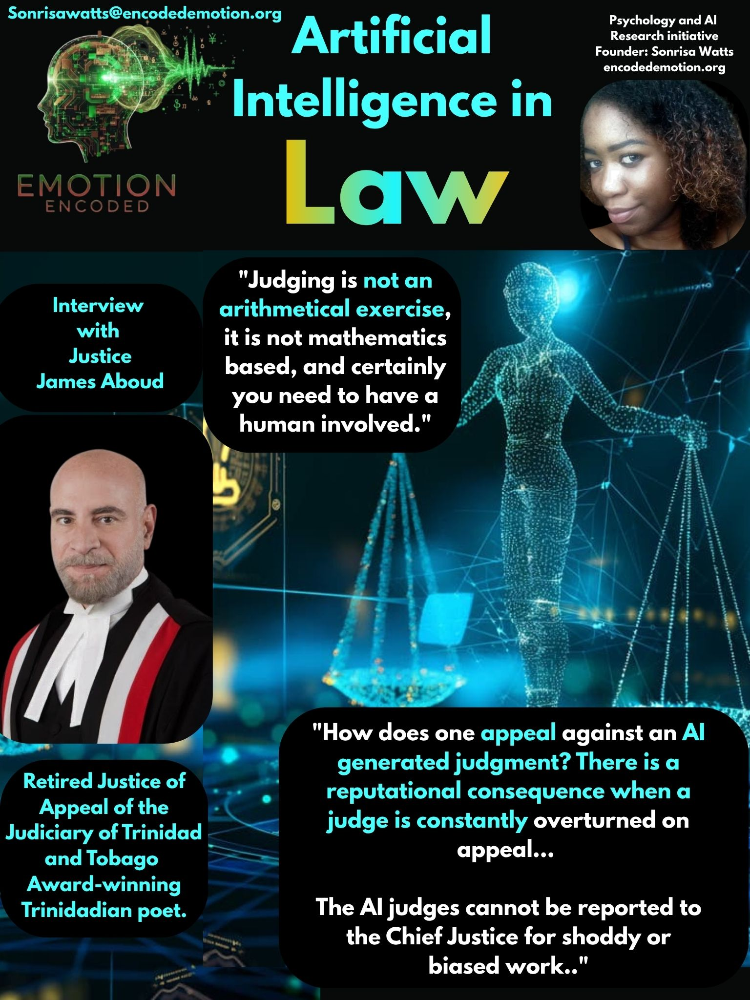

Emotion Encoded conducted a qualitative interview with retired Court of Appeal Judge James Aboud of Trinidad and Tobago to examine trust calibration between human intuition and Artificial Intelligence in judicial practice.
Drawing from 18 years of experience in the High Court and Court of Appeal Aboud argues that current AI systems are too often unreliable for legal research, incapable of interpreting the complex human behavior of witnesses under stress, and fundamentally unsuited to replace the human empathy required for the dispensation of justice.
A major barrier to trust calibration in legal technology is the structural unreliability of generative models. Justice Aboud notes that while AI can assist with the art of writing, “it too often invents false or unreliable legal authorities to support its legal propositions”. He also said this: “The common law develops incrementally and a dissenting minority judgment in a superior court often widens our understanding and occasionally triggers a shift in thinking or a way to distinguish the principle in the leading authority to the particular fact situation under review. Human behaviour is often idiosyncratic and it produces unusual legal disputes that must be resolved using the written law as a guage. AI all too often mines the head note of the leading case and does not weigh the applicability of a powerful dissenting judgment in another judgment in resolving a new or idiosyncratic fact situation.”
Reflecting on his time on the bench, Justice Aboud stated, "I have found that in its current incarnation, it is not reliable." When testing legal propositions, he observed that "AI will cite the leading cases to me if I ask a question about what the judges have held in earlier judgments, and when I doublecheck the cases that it says supports the proposition, those cases do not." Highlighting the risk of fabricated data, he explained that AI supplies cases "where either the case does not exist; it is cited with the wrong parties names, or the citation from the law report is wrong. When a lawyer files written submissions the judge relies on Counsel’s oath of office that he or she has accurately researched and stated the law." Emphasizing the importance of verifiable metadata, he noted, "The citation is the critical thing. It is like the genome of the research—once you have the genome, you can find the report in a proper search. If the citation is wrong you can’t read the actual judgment."
Evaluating witness credibility is traditionally viewed as a core judicial skill, but Justice Aboud firmly rejects the idea that a machine can assess the credibility of a witness on the stand.
When asked if he would trust an algorithm to judge truth, Justice Aboud replied, "The answer must firmly be No. I would never do that. I have tried many cases for 14 years in a trial court, and nothing beats a human being observing the demeanor or credibility of a witness." He stressed that behavioral markers cannot be read in a vacuum because human stress is often driven by external factors. Illustrating this, he noted that a witness looking nervous or dodging a question might simply be experiencing exogenous pressure: "You do not know as a judge whether, it now being 3 o'clock in the afternoon, the trial having dragged on all day, whether the lady witness has suddenly realised that her child needs to be picked up at school.” Because external anxiety can create evasiveness, loss of attention, or a lapse of memory, automated behavioral surveillance fails. “Human judges must nevertheless weigh their impressions of demeanour against documentary consistency and conflicting oral testimonies. A machine might be able to replicate the function of testing consistencies, but in so far as an assessment of demeanour is connected with that exercise it would be unsafe to allow it to do so”.
When considering whether a litigant should choose a human judge or an unbiased computer, Justice Aboud completely rejected algorithmic adjudication.
Stating his position clearly, Justice Aboud noted, "I would never choose a completely unbiased computer. Never. I don't think that that is possible, having regard to the technologies now available. I don't think that it is advisable." He emphasized that adjudication is not a mechanical task, explaining, "The dispensation of justice is a human value; it is an act of humanity; it involves fairness, an appreciation of social conditions and human idiosyncrasies, and an understanding of where the heart of the dispute is actually located." While computers can handle mathematics, "judging is not an arithmetical exercise, it is not mathematics based, and certainly you need to have a human involved." Affirming the necessity of human oversight and especially the appeal mechanisms, he concluded that high stakes disputes, such as child custody, should never be handled by automated systems. “How does one appeal against an AI generated judgment? There is a reputational consequence when a judge is constantly overturned on appeal. If the AI judge is constantly overturned litigants would lose faith in the technological system itself and not the human judge. The AI judges cannot be reported to the Chief Justice for shoddy or biased work”.
Research Implications for Emotion Encoded
The interview with Justice James Aboud reinforces the central findings of the Emotion Encoded initiative. Legal experts view AI with profound epistemic caution. Because generative tools suffer from hallucinated citations, lack situational awareness regarding human emotional stress, and cannot provide the empathy required for fairness, judicial decision-making must remain strictly under human stewardship.
Sonrisa Watts // Emotion Encoded // 2026